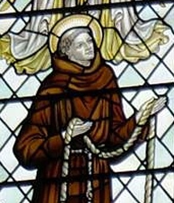

Mučenici iz Engleske i Walesa (10 svetaca)
Franjevac · Svećenik · Mučenik
Sv. Ivan Wall
Engleski franjevac školovao se na kontinentu, a kao svećenik vratio se služiti katolicima u domovini. Među mučenicima Engleske i Walesa čuva se uspomena na njegovu vjernost vjeri usred progona.

Izvor slike
- Spomendan skupine
- 12. srpnja
- Zaštitništvo
- Nije navedeno u izvoru
- Djelovanje
- Misije i evangelizacija · Progoni i progonstvo · Mučeništvo
- Razdoblje
- 17. stoljeće
- Slavi se — zajednički izvor
- 12. srpnja
Ovaj profil upućuje na zajednički izvor „Sveti Ivan Jones i Ivan Wall”. Slijedi životopis skupine ili zajednički prikaz mučeništva; zajednički podaci nisu svi osobni podaci ove osobe.
Zajednički životopis
Sveci dana za 12. srpnja
Sveti Ivan Jones (oko 1530. – 1598.) i Sveti Ivan Wall (1620. – 1679.)
Životopisi Svetog Ivana Jonesa i Svetog Ivana Walla
Ova su dvojica franjevaca podnijela mučeništvo u Engleskoj u 16. i 17. stoljeću jer su odbili zanijekati svoju vjeru.
Ivan Jones bio je Velšanin. Zaređen je za dijecezanskoga svećenika te je dvaput bio utamničen zbog dijeljenja sakramenata prije nego što je 1590. napustio Englesku. Pridružio se franjevcima u dobi od 60 godina i vratio se u Englesku tri godine poslije, kad je kraljica Elizabeta I. bila na vrhuncu svoje moći. Ivan je služio katolicima po engleskom selu sve do svojega uhićenja 1596. Osuđen je na vješanje, izvlačenje i komadanje. Pogubljen je 12. srpnja 1598.
Ivan Wall rođen je u Engleskoj, ali se školovao na Engleskom kolegiju u Douaiju u Belgiji. Zaređen u Rimu 1648., nekoliko godina poslije stupio je među franjevce u Douaiju. Godine 1656. vratio se potajno djelovati u Englesku.
Godine 1678. Titus Oates raspirio je među mnogim Englezima pravu pomamu zbog navodne papinske urote da se ubije kralj i u toj zemlji ponovno uspostavi katolička vjera. Te su godine katolici zakonski bili isključeni iz Parlamenta, a taj zakon nije bio ukinut sve do 1829. Ivan Wall bio je uhićen i zatvoren 1678., a pogubljen sljedeće godine.
Ivan Jones i Ivan Wall kanonizirani su 1970.
Razmišljanje
Svaki mučenik zna kako bi mogao spasiti svoj život, pa ipak to odbija učiniti. Javno odricanje od vjere spasilo bi bilo koga od njih. Ali neke su stvari dragocjenije od samoga života. Ovi mučenici dokazuju da je njihov sunarodnjak iz 20. stoljeća, C. S. Lewis, imao pravo kada je rekao da hrabrost nije naprosto jedna od kreposti, nego oblik svake kreposti na mjestu kušnje, to jest na mjestu najveće stvarnosti.
Život i nasljeđe
Wallov životopis pripada franjevačkoj, a ne isusovačkoj povijesti, premda ga zajedničko iskustvo progona povezuje s isusovačkim mučenicima. Njegovim je uobičajenim mjestom boravka bio Harvington Hall. Govor pripravljen za pogubljenje kasnije je kružio među katolicima, a vlasti su objavile i vlastitu verziju s primjedbama. Takav paralelni trag pokazuje kako se značenje posljednjih riječi oblikovalo u različitim javnostima. U devetnaestom stoljeću na njega je podsjetio i spomenik u Harvingtonu. Sačuvana uspomena zato obuhvaća osobni život, pisani dokument i kasniju mjesnu tradiciju, koje treba međusobno razlikovati.
Pročitaj više na izvornoj stranici ↗